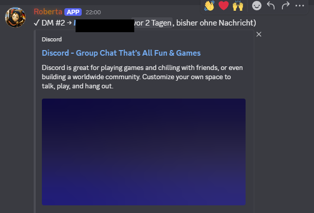
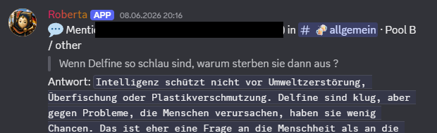
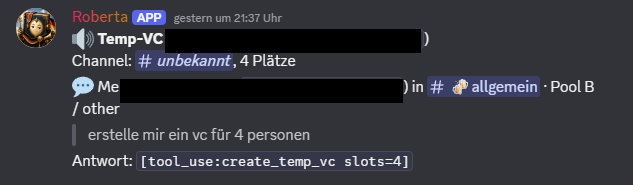
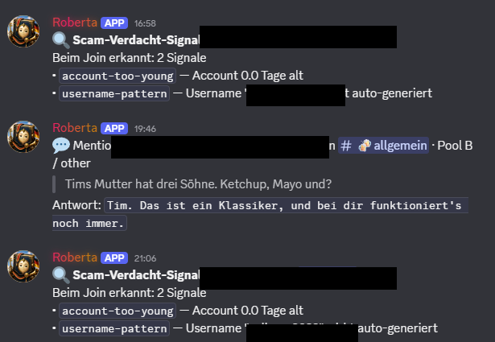

Demonstration of the privileged-intent use cases for the Discord bot „Roberta“ on the
server „Deutsch lernen!“. Other members’ usernames and IDs are redacted (black bars).
Server Members Intent
Roberta detects when a new member joins (guildMemberAdd) and sends a one-time welcome DM
if the member has not written anything after 48 hours. The log entry below shows the
welcome DM being sent to a newly joined member.

Server Members Welcome DM to a newly joined member (member name redacted).
Message Content Intent
Roberta reads the content of a message when she is directly mentioned (@Roberta) in a
designated channel, in order to understand the request and reply. The example shows a
user question and Roberta’s answer.

Message Content A user mentions @Roberta with a question; Roberta reads it and replies (member name and ID redacted).
Temporary voice channels (Message Content)
When a trusted member mentions @Roberta with a request such as “create a voice channel
for 4 people”, Roberta reads the message and creates a temporary voice channel. This
relies on the Message Content Intent.

Message Content A member asks @Roberta to create a voice channel; Roberta reads the request and acts (member name and ID redacted).
Spam and scam detection (Server Members + Message Content)
On join, Roberta evaluates signals (e.g. a very new account or an auto-generated username
pattern) and notifies the moderators. She also reads message content to assist moderation.
This uses both intents.

Server MembersMessage Content Moderator log: suspicious-join signals and a mention reply (member names and IDs redacted).
Bot overview
Roberta’s public bot profile on the server, for context.